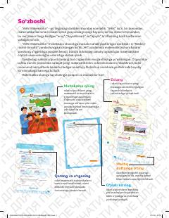

6M6-sinf uchun matematika fanidan ikkinchi qism darslik.
Mazkur darslik umumta'lim maktablarining 6-sinf o'quvchilari uchun mo'ljallangan bo'lib, matematika fanini chuqurroq o'rganishga xizmat qiladi. Kitobda tezlik, hajm, doiraviy diagrammalar va fazoviy jismlar kabi mavzular amaliy misollar yordamida tushuntirilgan.